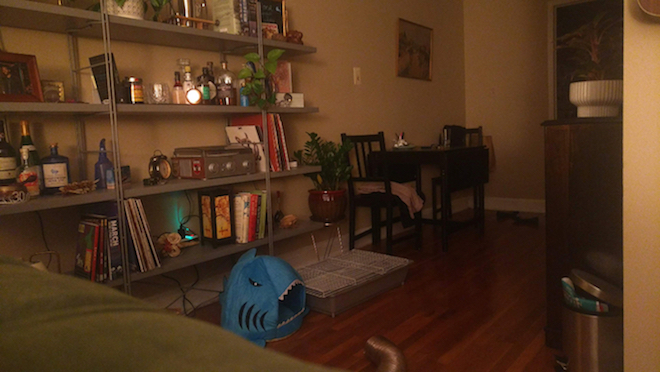

When someone does something that they know that they shouldn’t do, did they.
Dynamic range describes the ratio of the brightest light to the most dim light in a scene. The world is high dynamic range, and to see it correctly, imaging sensors must be able to make HDR measurements. Cameras work well in scenes that are either bright or dim, but HDR scenes with both bright and dark regions usually result in some parts of the image being saturated and others too dark. The age-old solution has been taking many images at different exposures and then creating a composite image by hand in a photo editor so all parts of the scene are well-represented. Luckily, many cameras now have this built-in and can compose HDR images algorithmically in fractions of a second. I decided to explore how this works. To understand the noise-optimal approach, you must understand photography in the context of random processes.
In a typical photography scene, there is at least one light source. These light sources emit photons randomly via a process called spontaneous emission. For an incandescent bulb, each atom composing the filament is heated via electrical current. This thermal energy excites the atom's electrons, causing them to rise to higher energy states. Higher energy states are unstable, and electrons will randomly release excess energy to return to their lowest-energy ground states. This energy is released sponteously as a photon traveling in a random direction. So at any moment, a scene's appearance is the result of photons released by lights in random directions, bouncing off of objects in the environment, and hitting a camera pixel. So each point in the scene sends photons to the camera at random intervals with an average rate of Φ photons per second (radiant flux). Camera pixels divide the number of received photons by the exposure time to estimate the brightness. So photography is really the process of calculating the average rate at which photons are received from scene spots seen by the pixels. Unsurprisingly, these measurements are imperfect; the shorter the exposure, the larger the estimation error, and the noisier the image.
Assume you have 25 identical quarters of unknown bias. You also have a box split into 25 sections in a 5x5 grid, and you place a quarter in each. If you estimate the their fairness by flipping each coin twice, it is unlikely your results will all agree -- your set of measurements will have large variance. If you decide to flip the coins 100 times, it is still unlikely all will have the same results, but you can expect them to agree more closely; the variance should decrease. Say you continue this experiment for an infinite number of trials. Your variance should go to zero, and all coins' biases converge to the true value.
This example is analogous to photography where each box is a pixel: If a pixel only counts photons over a short exposure, it is more likely to misestimate the true radiant flux, causing a uniformly bright surface to appear nonuniform in an image. In the example, the probability distribution was binomial, whereas it is Poisson for photography.



It has been established that a single photograph is a noisy estimate of a random photon arrival process. This concept is the basis for the low-noise HDR imaging problem, which can be stated as the following: Given two noisy images at different exposures, find optimal weights to produce an image with minimal noise. Assume you have two images, X & Y that are noisy estimates of the scene's true radiant flux, each with variance σx & σy. The HDR image will be a weighted average of the images, and the goal is to choose the optimal weights that minimize the noise (variance). We'll call the weights wx and wy, choosing them such that wx + wy = 1.